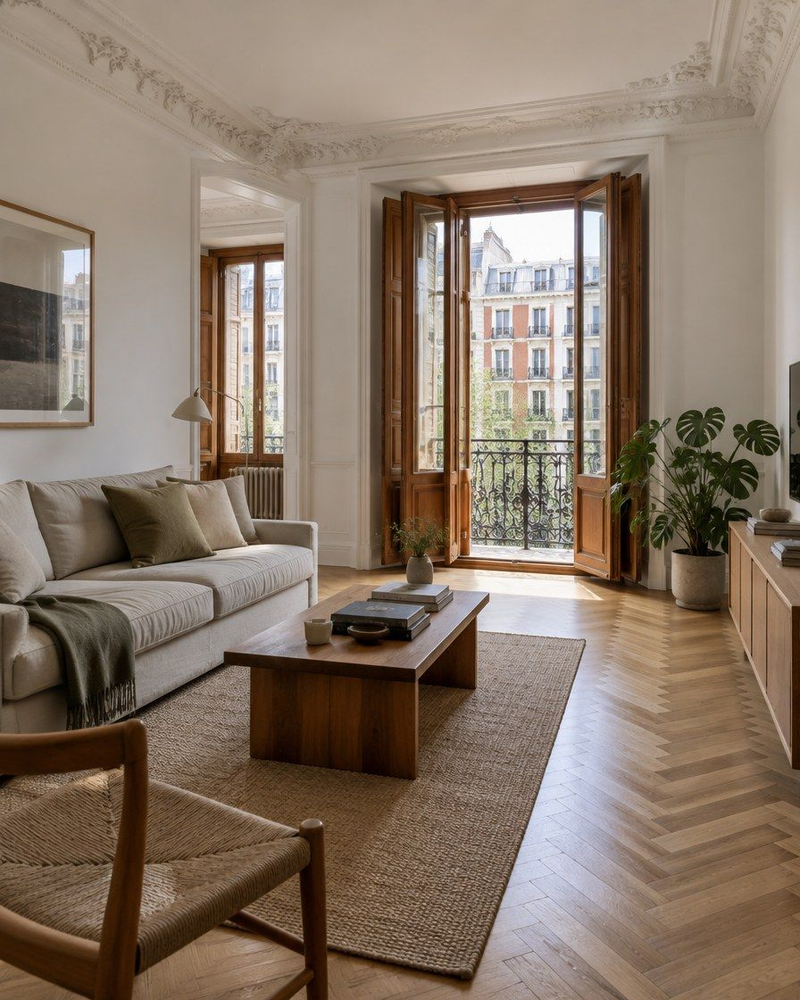
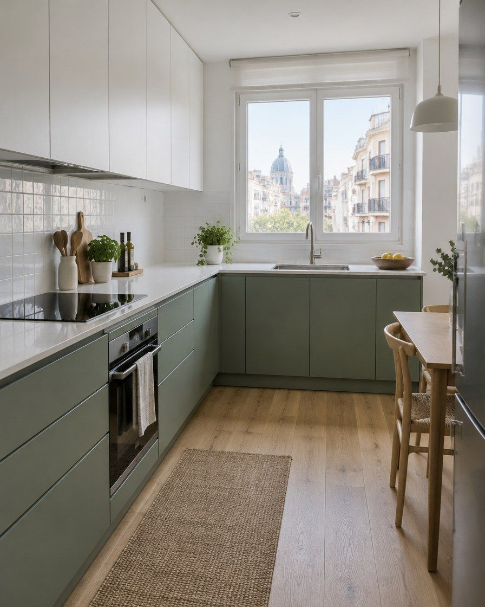
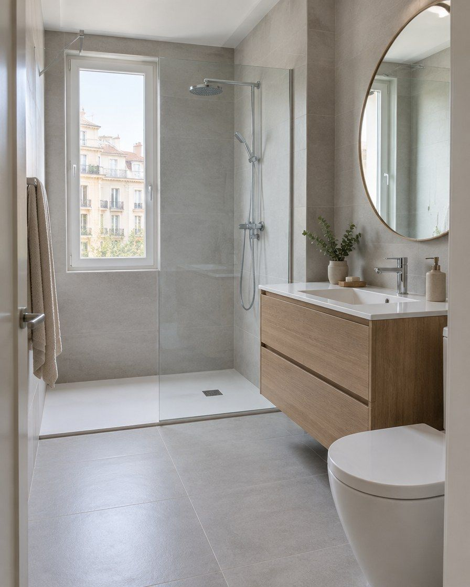
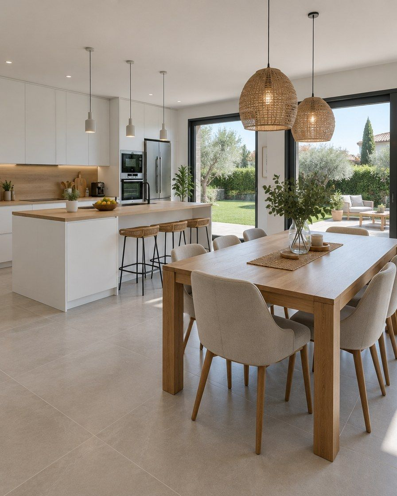
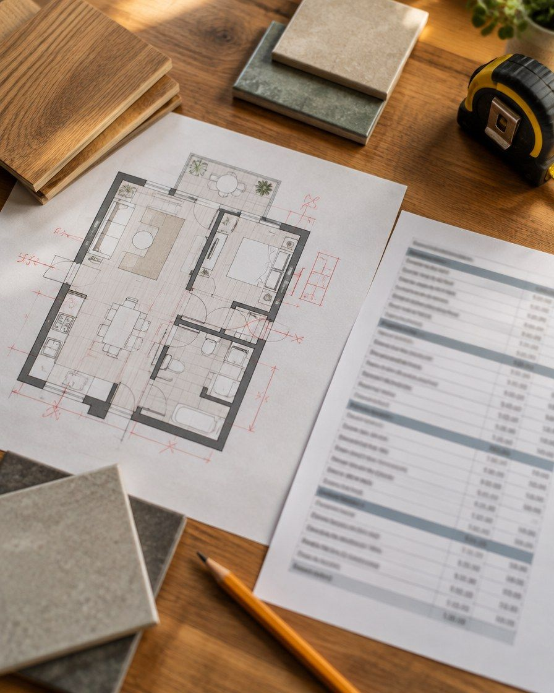

«Que acabe costando el doble.»
Cómo lo evitoAntes de empezar voy a tu casa, mido y te doy un presupuesto por partidas. Si algo cambia en obra, te lo valoro y lo decides tú antes de hacerlo.
Reformo pisos y chalets completos en Madrid capital y el noroeste. Visito tu casa y en 7 días tienes el presupuesto por partidas. Sin comerciales ni portales: hablas solo conmigo, de la primera visita a la entrega.

Es normal. Estos son los tres miedos que más me cuentan, y lo que hago para que no te pasen.
titular de su propia web · desarrolla el anuncio A · son los miedos que recogen las guías de consumo: presupuesto que entra bajo y sube, cambios a mitad de obra, retrasosAntes de empezar voy a tu casa, mido y te doy un presupuesto por partidas. Si algo cambia en obra, te lo valoro y lo decides tú antes de hacerlo.
Reviso primero lo que no se ve (instalaciones, bajantes, suelo) para que no aparezca a mitad de obra, y te doy el plazo antes de empezar.
Proyecto y coordino toda la obra: fontanería, electricidad, albañilería, carpintería y acabados. Tú hablas solo conmigo.
Me dedico a reformas completas. Si lo tuyo no encaja, te lo digo el primer día y no te hago perder el tiempo.

Instalaciones, cocina, baños, distribución y, si hace falta, ventanas.

Lo que se ve y lo que no se ve: luz, agua, bajantes y suelo.

De la misma vivienda, a partir de 15.000 €. [C]
A confirmar: ¿baño o cocina sueltos dentro de la M-30? Un baño solo va de 4.000 a 7.000 € [C], por debajo del mínimo. No se anuncia; si entra, pasa por las segundas preguntas.

Lo proyecto y lo coordino de principio a fin: un presupuesto por partidas y una sola persona al otro lado del teléfono.
Boadilla · Majadahonda · Villaviciosa · Torrelodones · Aravaca
= anuncio B · a confirmar hasta dónde va con los chaletsSi tu casa está en otra zona, cuéntamelo igualmente y te digo si llego.
Sus 14 zonas prioritarias [C]. Las excluidas (sur entre M-30 y M-40) no se nombran: se filtran por código postal y se excluyen en el público de Meta.
Así sabes en todo momento qué viene después y cuándo.
Me cuentas tu casa y ves desde cuánto sale una reforma así.
Te escribo yo el mismo día laborable para hablar 10 minutos.
Voy a tu casa, mido y reviso lo que no se ve. Siempre hago hueco. [C]
Por partidas, con materiales y plazo, a los 7 días de la visita. [C]
La coordino yo, con todos los gremios. Cualquier cambio, por escrito antes de hacerlo. [C] quiere los cambios por escrito
El presupuesto que entra bajo y luego sube suele fallar en lo que no se ve. Por eso lo miro antes de darte una cifra.
Cuadro eléctrico, cableado y tuberías: si hay que cambiarlos, va en el presupuesto desde el principio.
En pisos antiguos son la sorpresa más cara. Los compruebo antes de tocar un baño o una cocina.
Nivel, humedad y forjado. Decide si se puede poner encima o hay que levantar.
Si conviene cambiarlas, te lo digo ahora y no cuando ya está pintado.
Dos presupuestos con el mismo total pueden ser obras muy distintas. Aunque al final no lo hagas conmigo.
«Prefiero decirte la verdad antes de empezar que darte una sorpresa a mitad de obra.»
SoniaArquitecta · Al Milímetro
a confirmar la frase (la escribimos con su tono) · sin «más de 20 años» hasta que lo confirmeLuz, orden y materiales que duran. Lo decidimos juntos en el proyecto.
fotos provisionales de ambiente: no se presentan como obras suyas · cuando mande las suyas, aquí van sus obras con antes y después
Tardas 2 minutos. La cifra buena te la doy después de ver tu casa.
Lunes a jueves, de 9:00 a 19:00 · viernes, de 9:00 a 15:00 [C]
Pruébalo: local, arreglos sueltos o código postal del sur → «no es lo nuestro». Menos de 15.000 € o «solo un baño» → segundas preguntas. Nada se guarda.
Depende de los metros, del estado y de los acabados. Una reforma completa de un piso suele empezar en unos 35.000 € a partir de 50 m². La cifra cerrada, por partidas, te la doy después de la visita. [C] pendiente de su Excel de horquillas
Depende del tamaño y de lo que haya que cambiar. Te doy el plazo antes de empezar, junto con el presupuesto.
Los hitos de pago van en el presupuesto, para que sepas qué pagas en cada momento. a confirmar con Sonia cómo cobra hoy
No. Esto no es un portal: lo que me cuentas en el formulario lo leo yo, la arquitecta que hará tu obra.
Te lo explico, te doy el precio y no se hace hasta que lo apruebas por escrito.
No. Me dedico a reformas completas de viviendas, y a cocina y baño de la misma vivienda. Para un arreglo suelto te irá mejor un albañil u oficial de confianza de tu zona.
Depende de la obra. Dime en el formulario dónde está tu casa y te digo si llego.
Mismo tono que la página: cercano, claro y de tú. Sale desde el número nuevo del negocio. Lo naranja lo rellena el sistema.
| Pieza | Anuncio | Landing | Formulario y WhatsApp |
|---|---|---|---|
| Mensaje | A «Sin extras ocultos» · B «Tu chalet, de principio a fin» · C «¿Cuánto cuesta?» | Hero = A · bloque ámbar de chalets = B · formulario = C | El primer WhatsApp nombra lo que pidió y la zona |
| Botón | «Calcula tu reforma» en las piezas · en Meta, «Más información» | «Calcula tu reforma» en cabecera, hero y cierre | El formulario se titula «Calcula tu reforma» |
| Precio | Solo «desde», sin precio cerrado | «Desde» y cifra buena tras la visita | Resultado «desde» por tipo de obra, pendiente del Excel |
| Qué no | Ni locales ni arreglos sueltos | «No hago: locales, arreglos sueltos» | Descarte con página y WhatsApp de «no es lo nuestro» |
| Sonia | Sin su cara | Su foto en «Quién está detrás», con la cinta de su web | Firma «Sonia, arquitecta» |
| Estilo | Colores, cinta y tipografía de su web | Los mismos | — |